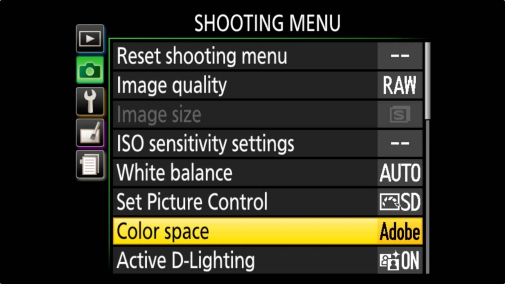

CSS3 Color
fill: rgb(243, 214, 155);
background: hsl(225deg, 45%, 60%);
border-color: goldenrod;
Wait - what changed?
- Adobe RGB and the SLR crowd
- P3 and Apple
- Mobile CMS
- Wide gamut, HDR TV/movies
Digital SLR colorspaces

Apple Display P3
- Primaries from DCI P3
- 2.2 gamma (rather than 2.6)
- D65 white point
- Same viewing conditions as sRGB
- iOS 9.3
- Colorsync
- Android Oreo
- CMS started
CIE Hue, Chroma (LCH)

LCH in CSS Color 4
background: lch(50 0 0);
border-color: lch(65 30 180 / 50%);
color: lch(55.3 84.5 10.25, #F06);
CIE a & b


Lab in CSS Color 4
background: lab(50 0 0);
border-color: lab(65 46 -8 / 50%);
color: lab(55.3 83.1 15.0 / 75%, #F06);
Predefined RGB Colorspaces
Default sRGB colorspace
Predefined image-p3 and rec2020 wide gamut RGB spaces
background: color(image-p3 1.0 0.0 0.5);
background: color(image-p3 .2 .14 .63 / 33%);
Media Queries 4 can check for p3 or rec2020 support
Custom RGB Colorspaces
At-rule (like @font-face) points to ICC profile
background: color(PP 0.84731607843137 );
// Pro-photo RGB space
@color-profile PP {
src: url('http://example.org/ProPhotoRGB.icc');
}
CMYK: ICC Color in CSS Color 4
At-rule points to ICC profile
background: color(CF39 .043931 .153460 .451743 0);
// Type 1 coated FOGRA 39 cmyk
@color-profile CF39 {
src: url('http://example.org/Coated_Fogra39L_VIGC_300.icc');
}
CMYKOGV: ICC Color in CSS Color 4
At-rule points to ICC profile
background: color(F55 .020630 .026108 .354391
0 .128435 .046815 .008667);
// FOGRA 55beta, CMYK Orange32 Green7 Violet23
@color-profile F55 {
src: url('http://example.org/FOGRA55beta.icc');
}